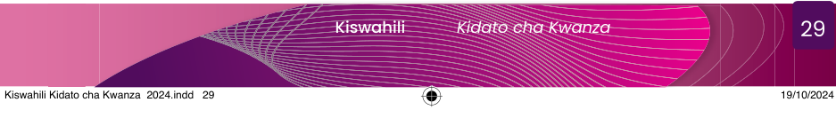

Zingatia
Maneno katika sentensi hupangwa kwa mpangilio maalumu na kwa kuzingatia uhusiano wa neno moja na lingine ili kuleta maana iliyokusudiwa. Mpangilio wa maneno katika kuunda sentensi hutawaliwa na kanuni za lugha mahususi. Mpangilio huo hulenga kuunda sentensi zenye maana na zinazoeleweka. Lugha ya Kiswahili ina muundo maalumu wa sentensi unaotokana na mpangilio wa maneno kulingana na aina zake na dhima zake katika tungo. Hivyo, maneno katika sentensi hayatokei kiholela. Kila aina ina nafasi yake katika sentensi.
Sentensi za Kiswahili huanza na nomino. Nomino huhusiana kwa karibu na kivumishi kwa kuwa kivumishi hutoa taarifa kuhusu nomino. Sehemu ya nomino huweza kukaliwa na kiwakilishi ambacho hufanya kazi badala ya nomino. Utokeaji wa kimojawapo katika tungo husababisha kingine kisitokee. Aidha, kitenzi ndicho hutoa ufafanuzi kuhusu tendo au tukio linalofanywa na nomino au kiwakilishi. Hivyo, nomino au viwakilishi na vitenzi vinahusiana kwa karibu kwa sababu hukamilishana. Vilevile, Kitenzi kinafuatana kwa karibu na kielezi kwa sababu kielezi hutoa taarifa ya namna kitendo kilivyofanyika, na mahali kilipofanyikia au kiasi cha kufanyika kwake. Pia, huonesha kiwango cha sifa za nomino kwa kutoa taarifa zaidi kuhusu kivumishi. Mifano ifuatayo inaonesha uhusiano huo.
Mgonjwa yule ameruhusiwa jana.
Wezi watatu walikamatwa juzi usiku.
Hawa hodari wamefanya vizuri.
Ana ni mrefu.
Katika sentensi namba 1, neno yule linahusiana kwa karibu na neno mgonjwa na neno jana linahusiana kwa karibu na neno ameruhusiwa. Vilevile, katika sentensi namba 2, neno watatu linahusiana kwa karibu na wezi na juzi usiku linahusiana na walikamatwa. Aidha, katika sentensi namba 3, neno hodari linahusiana kwa karibu na hawa na neno vizuri linahusiana kwa karibu na wamefanya. Pia, sentensi namba 4, neno mrefu linahusiana kwa karibu na neno Ana.
